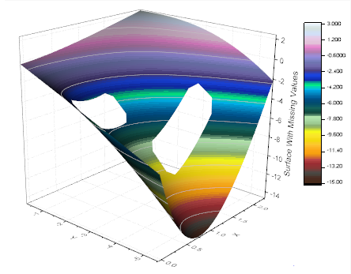
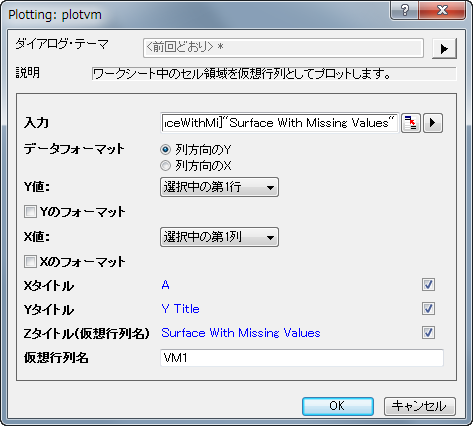
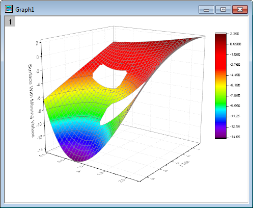
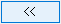
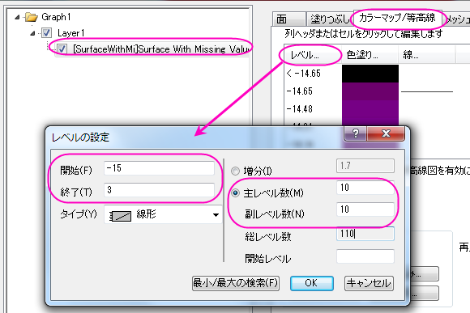
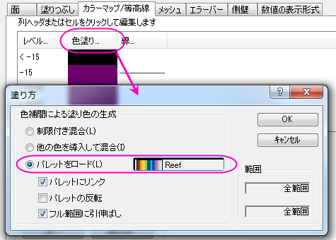
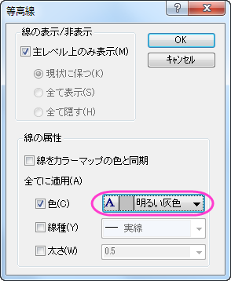
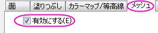
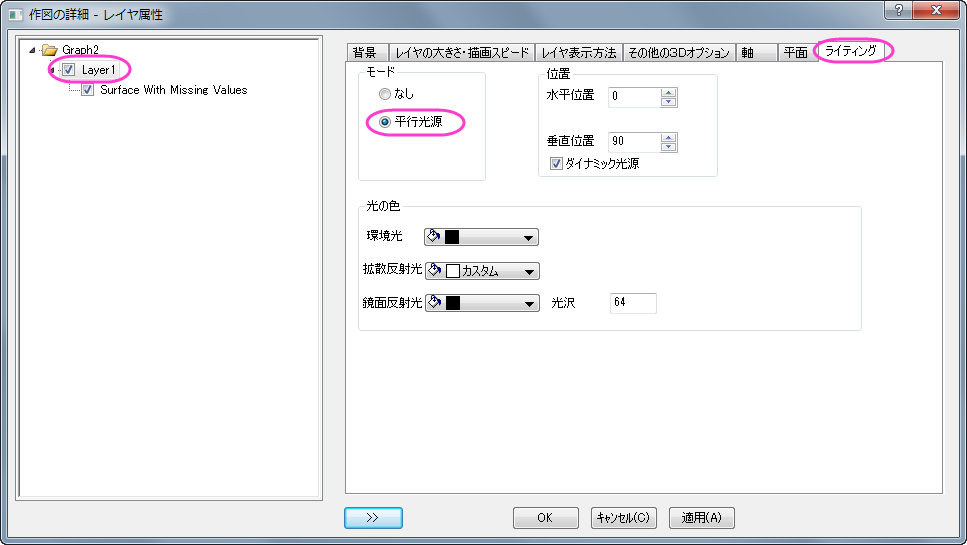
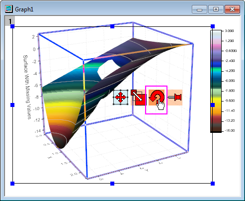

欠損値を含む曲面図
3D-Surface-With-MissingVal
サマリー
このチュートリアルでは、以下のように欠損値を持つ行列から3Dカラーマップ曲面図を作成します。また、編集により、グリッド線を削除する方法も示します。
- 
必要なOriginのバージョン: Origin 2015 SR0以降
学習する項目
このチュートリアルでは、以下の項目について解説します:
- 欠損値を無視して行列から3D曲面図を作成する
- 3D曲面図のグリッド線をスキップする
- 等高線を設定する
- 等高線ラベルと塗りつぶしの色をセットする
ステップ
- 新しいワークシートを開き、/Samples\Graphing\Surface With Missing Values.datファイルをインポートします。ワークシートの左上角にカーソルを移動し、斜めを向いた黒い矢印を表示させます。クリックしてワークシート全体を選択します。メインメニューから作図：3D：3Dカラーマップ曲面を選択し、グラフを作成します。このグラフには仮想行列を使用するため、plotvm
(plot virtual matrix)ダイアログが表示されます。以下の通り、デフォルトの設定のままOKをクリックします。
- 
- 下図のようなグラフになります。
- 
- グラフのプロット上でダブルクリックして、作図の詳細（プロット属性）ダイアログを開きます。もし、左パネルが表示されていない場合、 ボタンをクリックしてダイアログを開きます。
左側パネルのノードを開き、Layer1の下にあるボックスがチェックされていることを確認します。これから、作図の詳細ダイアログの設定を使用してグラフを作図します。
右側パネルで、カラーマップ/等高線タブをアクティブにします。レベルヘッダをクリックし、レベルの設定ダイアログを開き、次の画像のようにダイアログを設定します。
- 
- 色塗りヘッダをクリックして、塗り方ダイアログを開きます。このダイアログで、パレットをロードラジオボタンを選択し、パレット選択ボタンをクリックして、Reefを選びます。パレットにリンクのチェックがついていることを確認します。OKボタンをクリックして、作図の詳細ダイアログに戻ります。
- 
- 線ヘッダをクリックし、等高線ダイアログを開きます。全てに適用項目の下にある色にチェックをつけ、色を明るい灰色に設定します。OK
ボタンをクリックして、作図の詳細ダイアログに戻ります。
- 
- 右側パネルのメッシュタブをアクティブにします。次の画像のように、有効にするチェックを外します。適用をクリックします。これで、グラフ上のメッシュ線を取り除きます。
- 
- 左側パネルでLayer1をクリックし、右側パネルでライティングタブを開きます。モードの下にある平行光源を選択します。OK
をクリックして設定を適用し、ダイアログボックスを閉じます。
- 
- 軸タイトルオブジェクトをダブルクリックし、XとYをそれぞれ「X」と「Y」に変更します。
- レイヤの空間をクリックし、３D変換コントロールツールを表示し、回転ボタンを選択して３Dグラフを目的の方向を向くように回転します。
- 
- 最終的に、下図のようなグラフになります。